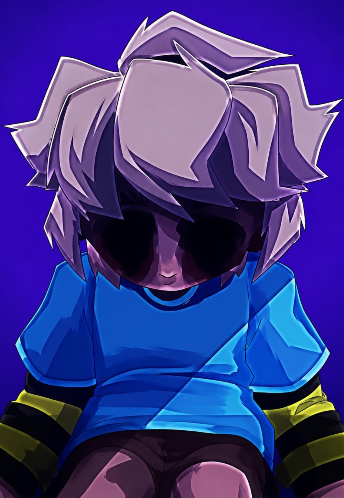
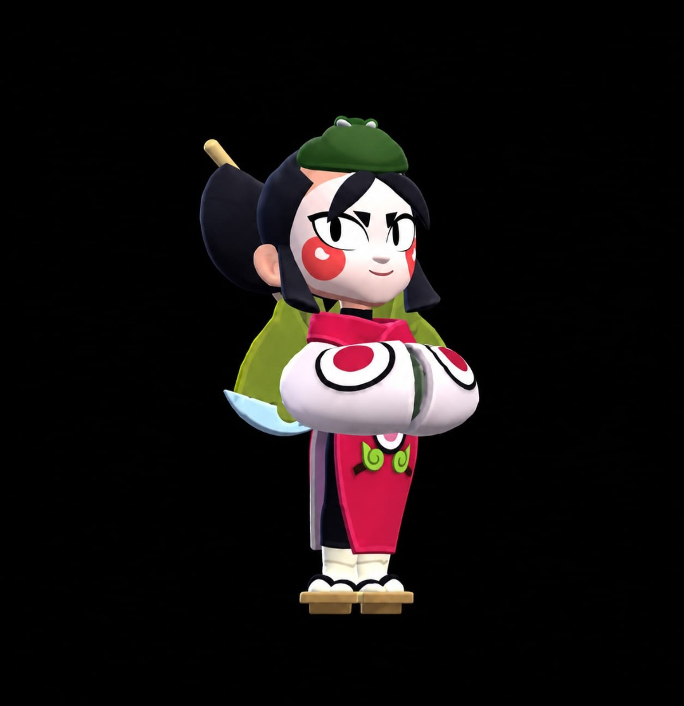

CURIOSITÀ SU HANK! 🪖

Sapevate Che Hank È Uno Dei Brawler Che È Rimasto Per Meno Tempo Senza Ricevere Modifiche 😱
Dopo La Sua Uscita Era Considerato Fin Troppo Forte Tanto Che Supercell Gli Applicò Una Serie Di Nerf In Rapida Successione 📉
Da Allora, Hank È Diventato Uno Dei Brawler Che Ha Ricevuto Più Cambiamenti Di Bilanciamento In Un Periodo Relativamente Breve
CURIOSITÀ SU LEON 🦎

Per Molti Anni Leon È Stato Considerato Uno Dei Brawler Più Difficili Da Bilanciare In Una Fase Del Gioco La Sua Star Power Fumo Curativo Gli Permetteva Di Recuperare Così Tanta Salute 🚑 Durante L'Invisibilità Da Poter Entrare In Un Combattimento Quasi Sconfitto E Uscirne Con La Vita Quasi Piena 🔋
Di Conseguenza, Gli Sviluppatori Hanno Nerfato ➖ Più Volte La Quantità Di Cura Perché Leon Riusciva A Eliminare Un Nemico Sparire Rigenerarsi E Tornare Subito All'Attacco.
GUS È MORTO 🧐

Il Brawler Gus È Un Bambino 👦, Gus Porta Con Sé Sempre Un Palloncino Perché Pensa Che Sia Suo Amico.... Se Guardate Dietro Il Personaggio Potete Vedere Che Ha Le Dita Incrociate
Ma Perché ?
Dato Che Questo Personaggio È Morto Lui Pensa Di Essere Ancora Vivo Per Dimenticare Che È Morto ☠️. Gus Si Aggira Nella Stazione Dello Starr Park Con Il Suo Amico Cioè Il Suo Palloncino 🎈 Che Lo Aiuta A Dimenticare Che È Morto
CURIOSITÀ SU KAZE 🍣

Quando Kaze È A Livelli 1-6 (Oppure Se Non Possiede Ancora Un Gadget 🔥 ), Il Gioco Le Fornisce Automaticamente Un Gadget Gratuito Che Serve Solo A Passare Dalla Forma Geisha Alla Forma Ninja ⚔️ E Viceversa. Una Volta Sbloccato Un Vero Gadget 💪, Questo Viene Sostituito E Non È Più Disponibile.
È Una Meccanica Unica , Introdotta Perché Il Cambio Di Forma 🔄 È Fondamentale Per Usare Il Personaggio